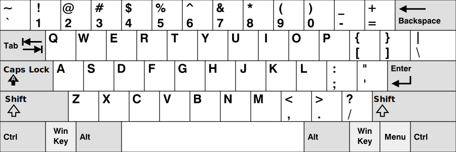
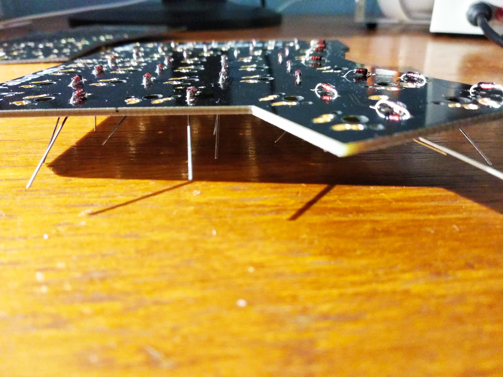
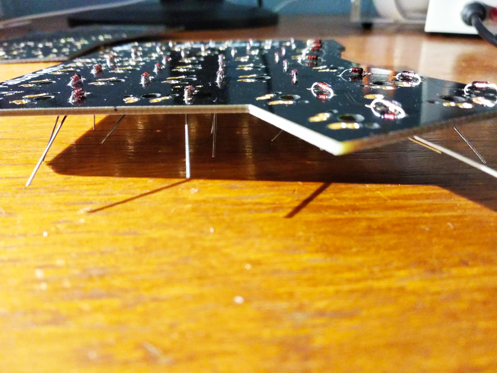

Klávesnice a ergonómia 21. storočia
Možnosti ako si prispôbiť klávesnicu pre komfort nie len pri
práci
Počiatok klávesníc
V roku 1870 Rasmus Malling-Hansen vynašiel prvý komerčne predávaný písací stroj.
Prvý úspešný písací stroj bol vyrobený v Amerike v roku 1873, Sholes a Glidden vlastnili patent a mal aplikované QWERTY rozloženie

Ako sedieť za počítačom
Problémy "moderných" klávesnic
Rôzne spôsoby ako vylepšiť ergonómiu klávesnice
1972
Ergonomickejšie písanie na existujúcej klávesnici
Šetrnejšie spínače
Pohodlnešia rozloha
Programovatelnosť a doplnky
Rozloženie znakov
QWERTY
- Prvý výskyt v roku 1870
- Postupne vyvinutý pre-usporiadaním znakov z pôvodných písacích strojov
- Najpopulárnejšie a najpoužívanejšie do dnes
Kvíz
Q
W
E
R
T
Y
U
I
O
P
Q
W
E
R
T
Y
U
I
O
P
_
_
_
_
_
_
_
_
_
_
T
Y
P
E
W
R
I
T
E
R
Náhoda?

Dvorak
- Patentovaný v roku 1936
-
Ciele:
- obmedziť výskyt chyb pri písaní
- zrýchliť písanie
- znížiť únavu
- mierený na anglický jazyk
Colemak
- Vznik v roku 2006
-
Ciele:
- efektívné, ergonomické písanie
- jednoduchší na naučenie z QWERTY
- stredným riadkov sa dá napísať 35 viac slov
BackspacenamiestoCapslock
Workman
- Vznik v roku 2010
-
Ciele:
- Rieši problémy pri písaní s Colemak
- Rozloženie znakov podľa sily prstov
-
CaVsú posunuté ale stále pri sebe
Porovnanie
Spínače

Druhy delenia:
- výška
- tlak
- hlasitosť
- správanie
"Shield" (obal)klávesnice
80%
40%
Ergodox

Corne

Dactyl
Moja prvá vlastnoručne vyrobená klávesnica
 

Redox
Návod a nákupný košíkMoja ostatná vlastnoručne vyrobená klávesnica
Skeletyl
Programovanie klávesnice
-
Dva populárne projekty:
- Quantum Mechanical Keyboard (QMK) Firmware
- Zephyr™ Mechanical Keyboard (ZMK) Firmware